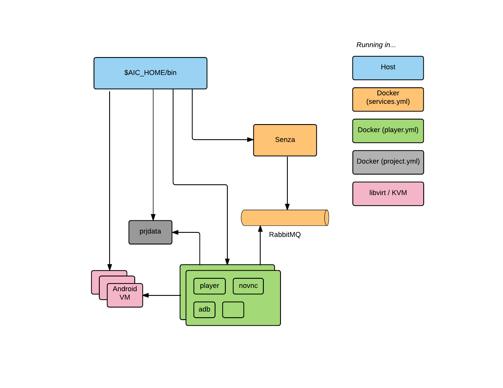
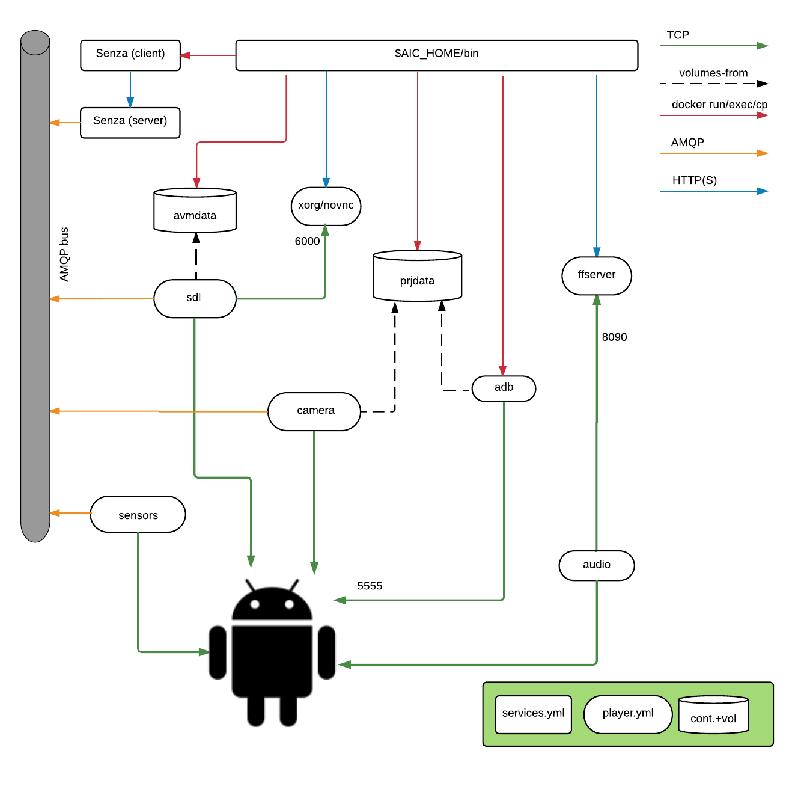

Installing AiC (local edition)
This repository contains the tools to build and run AiC in a "single host, single user" configuration.
Prerequisites
A modern linux distribution is required. It should be able to run Docker 1.10+, and qemu-kvm through libvirt.
The Docker images are built upon Ubuntu 16.04, and we assume the host is running Ubuntu 16.04 too, but it should be easy to install on another distribution.
Tools
Add the docker repository
$ sudo apt-key adv --keyserver hkp://p80.pool.sks-keyservers.net:80 --recv-keys 58118E89F3A912897C070ADBF76221572C52609D
$ echo "deb https://apt.dockerproject.org/repo ubuntu-xenial main" | sudo tee /etc/apt/sources.list.d/docker.list
Unfortunately the apt package "docker-compose" is not compatible with docker-engine, because it depends instead on the docker.io package. It is therefore installed as a Python package instead. (if you prefer, you can install it in a virtualenv)
$ sudo apt update
$ sudo apt install -y git make python-pip docker-engine libvirt-bin qemu-kvm
$ sudo pip install docker-compose
The commands in the next section assume that the current user can run Docker and libvirt.
A simple way to allow that is to add the user to the docker and libvirtd groups:
$ sudo adduser $(whoami) docker
$ sudo adduser $(whoami) libvirtd
(also logout and login again, to activate the new groups)
These groups might pose a security risk if you share the host with other
projects. Adding an untrusted user to the docker group is equivalent to granting
him root permissions, so you might prefer to manually prepend "sudo" to the
make commands and $AIC_HOME/bin/* scripts.
Installation overview
The following components will be deployed:
- A main directory ($AIC_HOME) to contain scripts, the Android VMs and system images
- Three Docker containers, shared among all VMs, to provide communication bus and API
- An arbitrary number of Android x86 VMs, limited by the host's CPU and RAM. You can change the default settings in lib/vm_template.xml
- A set of Docker containers for /each/ VM, to provide rendering and encoding, device emulation and a NoVNC UI

Installing $AIC_HOME
If you haven't yet, choose the location of $AIC_HOME.
$ export AIC_HOME=/path/to/local-aic
$ git clone git@github.com:AiC-Project/local-aic.git $AIC_HOME
$ cd $AIC_HOME
Install service and player images
From binaries
$ mkdir -p lib/images
$ curl -Lo lib/images/services.tar https://github.com/AiC-Project/local-aic/releases/download/0.8/services.tar
$ curl -Lo lib/images/player.tar https://github.com/AiC-Project/local-aic/releases/download/0.8/player.tar
$ make docker-load
docker load -i lib/images/services.tar
Loaded image: aic.senza:latest
docker load -i lib/images/player.tar
Loaded image: aic.ffserver:latest
Loaded image: aic.sensors:latest
Loaded image: aic.xorg:latest
Loaded image: aic.prjdata:latest
Loaded image: aic.avmdata:latest
Loaded image: aic.sdl:latest
Loaded image: aic.camera:latest
Loaded image: aic.audio:latest
From sources
$ make player-build services-build
cd src; git clone git@github.com:AiC-Project/player.git
Cloning into 'player'...
remote: Counting objects: 91, done.
[...]
Removing intermediate container 10b63f273bd0
Successfully built b15b7d2ef6ff
TAG=dev docker-compose -f lib/docker/services/services.yml build
rabbitmq uses an image, skipping
senza uses an image, skipping
$
Install VM images
From binaries
$ curl -L https://github.com/AiC-Project/ats.rombuild/releases/download/0.8/aic-kitkat.tar | tar xf - -C lib/images/
$ curl -L https://github.com/AiC-Project/ats.rombuild/releases/download/0.8/aic-lollipop.tar | tar xf - -C lib/images/
From sources
See https://github.com/AiC-Project/ats.rombuild
Running AiC
Backend services
The VMs need access to a few persistent services:
- An AMQP server
- A REST API and CLI command to dispatch events
- A docker volume to contain APKs and video files
These were written with the multiuser version of AiC in mind, so they are running in a simplified configuration here. You need to bring them up, as docker containers, and that's all. Note that rabbitmq is running with the default password (guest/guest).
$ ./bin/services-up
Creating network "services_default" with the default driver
Creating rabbitmq
Creating senza
$ ./bin/project-up
WARNING: The AIC_PROJECT_PREFIX variable is not set. Defaulting to a blank string.
Creating prjdata
$
Creating, listing, deleting VMs
To create a VM and the related player containers, run
$ ./bin/vm-create path/to/image
For the image path, substitute the folder containing the version of your choice:
| Version | Image Path |
|---|---|
| 4.4.4 Phone | ./lib/images/android/aic-kitkat/gobyp |
| 4.4.4 Tablet | ./lib/images/android/aic-kitkat/gobyt |
| 5.1.1 Phone | ./lib/images/android/aic-lollipop/gobyp |
| 5.1.1 Tablet | ./lib/images/android/aic-lollipop/gobyt |
The new VM will be assigned a random ID. You can list the VMs with the command
$ ./bin/vm-list
ahFu1ief
ooHoh0ib
WaeD8cei
chohCh7f
vum6h8ay
VMs can be accessed with the Virtual Machine Manager, but the video output will not be accessible since it must be decoded by a player service. See "vm-browser" below. The Virtual Machine Manager displays the boot screen, and that's normal.
Removing a VM is done with
$ ./bin/vm-delete vum6h8ay
Removing existing VM: vum6h8ay
[...]
Network services_default is external, skipping
Domain vum6h8ay destroyed
Domain vum6h8ay has been undefined
Virtual machine destroyed.
Connecting to a VM
To interact with the VM with a GUI, run
$ ./bin/vm-browser kpbmvzpw
Opening http://kanaka.github.io/noVNC/noVNC/vnc_auto.html?host=localhost&port=32771
Created new window in existing browser session.
You should find a new browser tab where you can interact with the Android VM. Sound output is not enabled in the local version of AiC, though the audio stream is processed and available via the ffserver container.
To open a shell on the VM, run
$ ./bin/vm-adb kpbmvzpw shell
root@gobyp:/ #
The fb-adb script will forward any parameter to an "adb" process running in a dedicated container:
$ ./bin/vm-adb kpbmvzpw shell getprop wifi.interface
eth1
Transfering files
Through adb
If you need to transfer files with push/pull/install, the adb process will not have access to the host filesystem, so it might be better to install the package android-tools-adb with apt. The IP address of each VM is in ./libs/vms/{vm_id}/ip
$ adb connect $(cat lib/vms/kpbmvzpw/ip)
connected to 192.168.122.214:5555
$ adb -s $(cat lib/vms/kpbmvzpw/ip):5555 pull /init
3776 KB/s (413355 bytes in 0.106s)
Installing an apk through Docker and vm-adb
If for some reason you have troubles using the regular adb commands, you can use docker to transfer files to the VM, through the aic.adb container.
$ docker cp path/to/file.apk kpbmvzpw_adb:/tmp/
$
Then you can install an apk on the VM, using the vm-adb install command.
./bin/vm-adb kpbmvzpw install /tmp/file.apk
Interact with the VM sensors
You can emulate the state of the device's sensors, battery etc. by using the "senza" command.
$ ./bin/senza help
usage: senza [--version] [-v | -q] [--log-file LOG_FILE] [-h] [--debug]
[--config CONFIG] [--debug-requests]
senza
optional arguments:
--version show program's version number and exit
-v, --verbose Increase verbosity of output. Can be repeated.
-q, --quiet Suppress output except warnings and errors.
--log-file LOG_FILE Specify a file to log output. Disabled by default.
-h, --help Show help message and exit.
--debug Show tracebacks on errors.
--config CONFIG Configuration file (default: senza-client.ini)
--debug-requests Print request details
Commands:
accelerometer Send a command to the accelerometer emulator
battery Send a command to the battery emulator
camera Select a video file to provide as camera input
complete print bash completion command
gps Send a command to the gps emulator
gravity Send a command to the gravity sensor emulator
gsm call Send a call command to the GSM emulator
gsm network Send a command to the GSM emulator
gsm registration Send a gsm registration command to the GSM emulator
gsm signal Send a gsm network command to the GSM emulator
gsm sms Send a SMS to the GSM emulator
gyroscope Send a command to the gyroscope emulator
help print detailed help for another command
light Send a command to the light sensor emulator
linear-acc Send a command to the linear_acc emulator
magnetometer Send a command to the magnetometer emulator
orientation Send a command to the orientation sensor emulator
pressure Send a command to the pressure sensor emulator
proximity Send a command to the proximity sensor emulator
recorder Send a command to start or stop video recording
relative-humidity Send a command to the relative_humidity sensor emulator
rotation-vector Send a command to the rotation vector sensor emulator
schema Display JSON schema for a given subcommand
temperature Send a command to the thermometer emulator
A detailed help is available for each subcommand:
$ ./bin/senza help battery
usage: senza battery [-h] avm_id level_percent ac_online status
Send a command to the battery emulator
positional arguments:
avm_id AVM identifier
level_percent battery level (0-100)
ac_online 0=battery; 1=AC
status One of CHARGING, DISCHARGING, NOTCHARGING, FULL, UNKNOWN;
default CHARGING
Camera emulation
The emulated camera is initialized with an mpg file, which can be replaced once the VM is running.
To upload and activate a new video:
$ ./bin/video-upload newcamera.mpg
$ ./bin/senza camera 0y8ekugp newcamera.mpg
The upload is required only once (on the prjdata container) and activated separately for each VM. The video must not contain an audio track. If the file is a still image, it will be converted to mpg on the fly.
Changing parameters
The VM resolution can be changed by setting the environment variables before running vm-create:
AIC_PLAYER_WIDTH=800
AIC_PLAYER_HEIGHT=600
A too small resolution prevents the virtual machine from booting, and a too big resolution can have performance issues.
Communication flow
